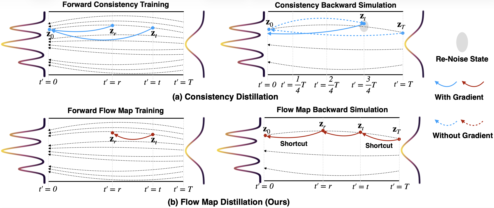
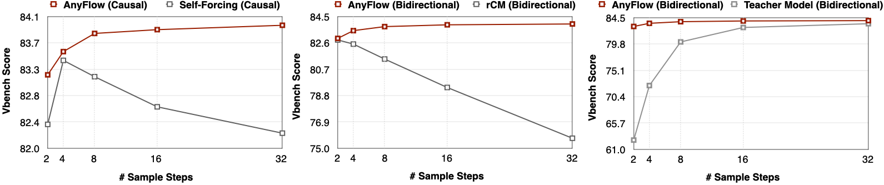
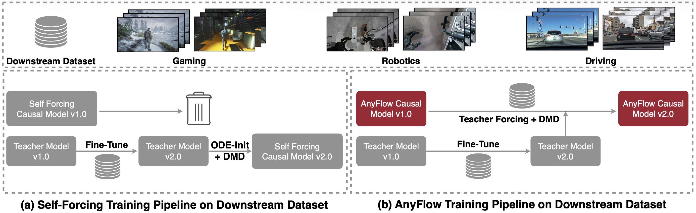
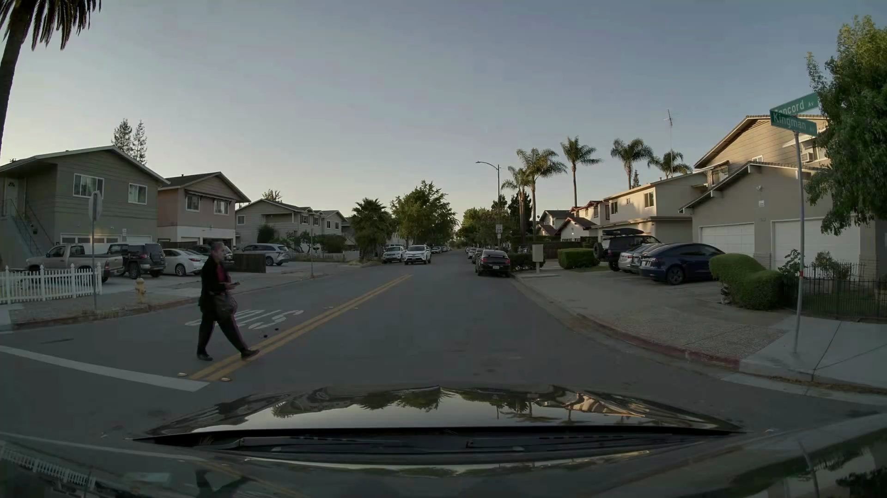
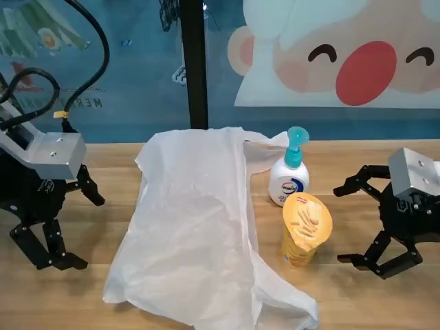

Teacher
4 NFEs
16 NFEs
32 NFEs
1NVIDIA 2Show Lab, National University of Singapore 3MIT

Arxiv 2026
Few-step video generation has been significantly advanced by consistency distillation. However, the performance of consistency-distilled models often degrades as more sampling steps are allocated at test time, limiting their effectiveness for any-step video diffusion. We argue that this limitation arises because consistency distillation replaces the original probability-flow ODE trajectory with a consistency-sampling trajectory, weakening the desirable test-time scaling behavior of ODE sampling. To address this limitation, we introduce AnyFlow, the first any-step video diffusion distillation framework based on flow maps. Instead of distilling a model for only a few fixed sampling steps, AnyFlow optimizes the full ODE sampling trajectory. To this end, we shift the distillation target from endpoint consistency mapping (zt → z0) to flow-map transition learning (zt → zr) over arbitrary time intervals. We further propose Flow Map Backward Simulation, which decomposes a full Euler rollout into shortcut flow-map transitions, enabling efficient on-policy distillation that reduces test-time errors (i.e., discretization error in few-step sampling and exposure bias in causal generation). Extensive experiments across both bidirectional and causal architectures, at scales ranging from 1.3B to 14B parameters, demonstrate that AnyFlow achieves performance comparable to or better than consistency-based counterparts in the few-step regime, while supporting flexible and scalable sampling under varying step budgets.

Figure 1. Consistency distillation vs. flow map distillation.

Figure 2. Quantitative test-time scaling of AnyFlow.
Figure 3. Qualitative test-time scaling of AnyFlow.
AnyFlow-FAR-Wan2.1-14B achieves better dynamic and quality compared to community-trained consistency counterparts (Krea-Realtime-Wan2.1-14B, LightX2V-Wan2.1-14B-CausVid and FastVideo-CausalWan2.2-A14B-Preview).
Within the same model, AnyFlow-FAR-Wan2.1-14B can support I2V generation as well; it achieves similar quality compared to Wan2.1-I2V-14B (50×2 NFEs).
Within the same model, AnyFlow-FAR-Wan2.1-14B can support V2V generation as well (4 NFEs).
The flow map formulation preserves a fine-grained instantaneous flow field, so the distilled model can be continued on downstream data while keeping few-step sampling. The training pipeline is illustrated below.

Figure 4. Continued training pipeline on a downstream dataset.
After fine-tuning AnyFlow-FAR-Wan2.1-1.3B on a specialized domain dataset, the model shows clear improvements in identity preservation (e.g., robot-arm type) and trajectory accuracy (e.g., moving pedestrians).


If you find our work useful, please consider citing:
@article{gu26anyflow,
title={AnyFlow: Any-Step Video Diffusion Model with On-Policy Flow Map Distillation},
author={Yuchao Gu and Guian Fang and Yuxin Jiang and Weijia Mao and Song Han and Han Cai and Mike Zheng Shou},
year={2026},
}